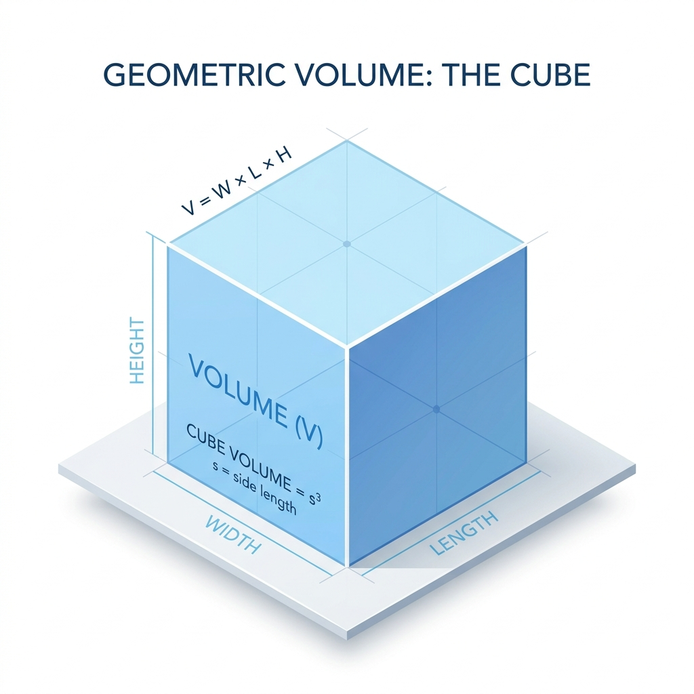

En el álgebra de noveno grado, elevamos el concepto de potenciación. Ya no solo multiplicamos números, sino variables (letras) que representan valores desconocidos. Las leyes de los exponentes se aplican de la misma manera a las expresiones algebraicas, permitiéndonos simplificar monomios y polinomios complejos.
- Producto: $x^a \cdot x^b = x^{a+b}$
- Cociente: $\frac{x^a}{x^b} = x^{a-b}$
- Potencia Negativa: $x^{-a} = \frac{1}{x^a}$
- Exponente Cero: $x^0 = 1$ ($x \neq 0$)
Al operar con monomios, recuerda la regla de oro: operar coeficientes con coeficientes y variables idénticas con variables idénticas. Veamos cómo se simplifican expresiones con múltiples variables.
El exponente de $y$ resulta negativo, por lo que lo enviamos al denominador.
paréntesis
Aplica la propiedad "potencia de una potencia" o "potencia de un producto" para deshacer los paréntesis exteriores.
bases idénticas
Multiplica los coeficientes numéricos entre sí y junta las variables iguales (las $x$ con las $x$, etc.).
exponentes
Suma los exponentes si están multiplicando o réstalos si se están dividiendo.
negativos
Expresa el resultado final usando solo exponentes positivos, invirtiendo las bases con exponentes negativos.
El diseño de empaques industriales utiliza potenciación algebraica. Si las dimensiones de una caja están dadas por monomios (ej. base $3x$, ancho $2xy$, altura $x^2$), su volumen será el producto de ellos: $V = (3x)(2xy)(x^2) = 6x^4y$. Esto permite a los ingenieros calcular el espacio exacto sin importar el valor que tome $x$ o $y$.
Problema: Simplifica la siguiente expresión matemática: $\left(\frac{2a^3b^{-2}}{3a^{-1}b^4}\right)^2$
1. Operamos dentro del paréntesis:
Coeficientes: $\frac{2}{3}$ (no se simplifica)
Variable $a$: $a^{3 - (-1)} = a^4$
Variable $b$: $b^{-2 - 4} = b^{-6}$
Expresión interna: $\frac{2a^4 b^{-6}}{3}$
2. Aplicamos la potencia exterior ($^2$):
Coeficientes: $\left(\frac{2}{3}\right)^2 = \frac{4}{9}$
Variables: $(a^4)^2 = a^8$; $(b^{-6})^2 = b^{-12}$
3. Exponentes positivos:
$\frac{4a^8}{9b^{12}}$
